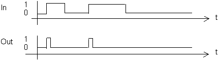

[R_TRIG] Recognize positive edge and trigger pulse
R_TRIG recognizes a positive edge.
Functioning
For a positive edge of input [In], output [Out] is set to [Out] = 1 for the program cycle.

Pins
Input | Description | Data type | Default value |
|---|---|---|---|
|
In | Input | Boolean | 0 |
0 - No | |||
Output | Description | Data type | Default value |
|---|---|---|---|
|
Out | Output | Boolean | 0 |
0 - Off | |||
Application
R_TRIG is used for various kinds of control tasks such as to recognize the initial use of a button.
Process response
Initialization prior to function processing:
- The old state of input value [In] is initialized with 1.
From the third process cycle, R_TRIG is processed with the value at the input, as the initialization type is identified only after the positive edge is recognized. The default value is issued during the first two process cycles.

Continuous signal [In] = 1 is not recognized as a positive slope on processing. Output [Out] remains = 0.